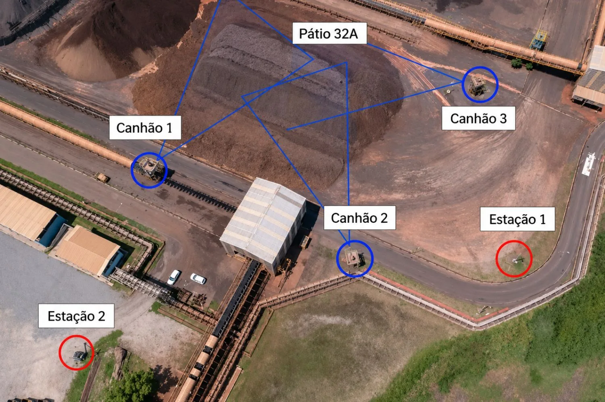
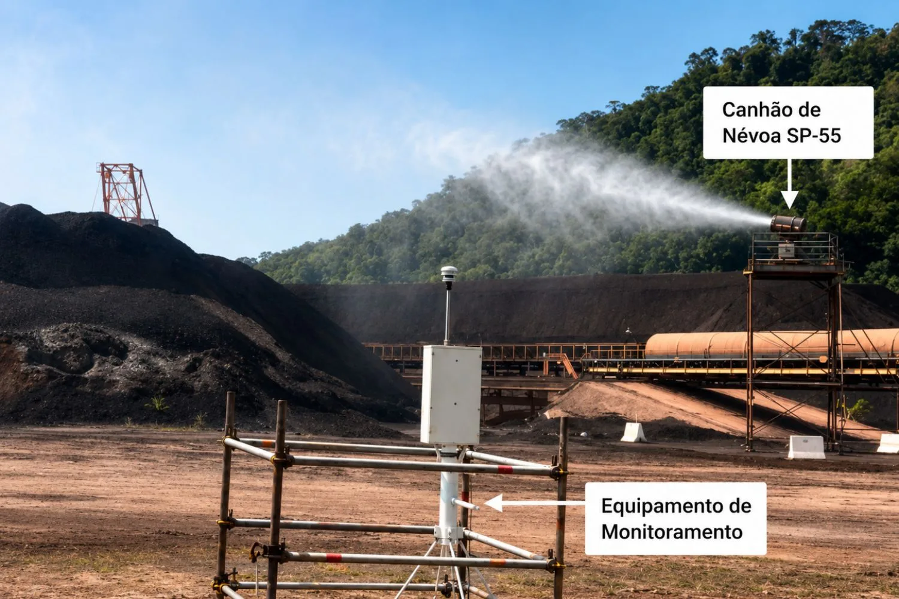
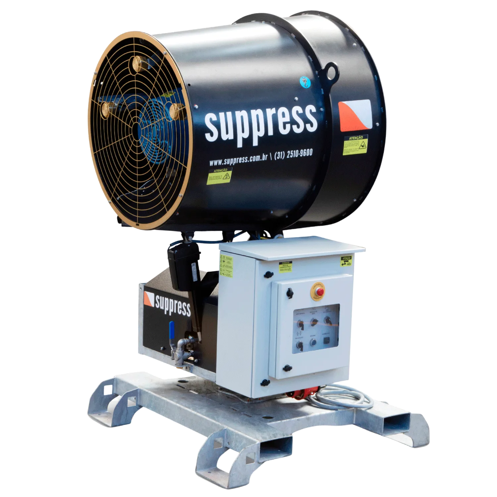

Redução de até 80% de poeira comprovada no Porto Sudeste
Estudo técnico realizado em 6 meses com monitoramento contínuo. Canhões SP-65 e SP-55 operando no Pátio 32A.

Por que o Porto Sudeste escolheu os canhões de névoa?
O Porto Sudeste realizou um estudo técnico aprofundado utilizando os canhões de névoa da Suppress para avaliar, com rigor científico, o desempenho desta tecnologia no controle de material particulado em suspensão.
Os canhões geram um ambiente carregado de microgotas de água extremamente finas. Essas partículas se unem às partículas de pó em suspensão, aumentando sua massa e acelerando a precipitação.
Os resultados comprovam que esta solução é altamente eficiente, econômica no consumo de água e aplicável em diferentes condições climáticas.
Como a tecnologia de névoa elimina a poeira
Microgotas de Alta Precisão
O equipamento projeta gotículas em tamanhos otimizados para interagir com partículas finas (MP2,5, MP10 e PTS), criando uma névoa densa ao redor da fonte emissora.
Aumento de Massa e Precipitação
As microgotas aderem às partículas de pó, aumentando sua massa e fazendo com que precipitem mais rapidamente, evitando a dispersão para comunidades e corpos hídricos.
Barreira de Proteção Perimetral
Os canhões criam uma cortina de névoa que impede a dispersão da poeira para além da zona de origem, mesmo com ventos desfavoráveis.
Alcance Superior ao Visual
O monitoramento comprovou que a névoa permanece ativa e abate material particulado em pontos além daqueles onde é visualmente detectada.
6 meses de testes com monitoramento contínuo no Pátio 32A
O Porto Sudeste, a Suppress e empresa especializada em monitoramento definiram conjuntamente os pontos de coleta e o posicionamento dos equipamentos.
3 canhões em torres de 5 metros
1 unidade SP-65 (60 L/min) e 2 unidades SP-55 (50 L/min cada), posicionados no perímetro do Pátio 32A.
Condições de acionamento controladas
Ativados apenas com emissão visível, baixa umidade e vento soprando do pátio em direção às estações.
Giro automático e inclinação de 20°
Oscilação de 15° para cada lado, maximizando a cobertura na área de origem da poeira.
Duas estações de monitoramento independentes
Instaladas para evitar interferência de outras fontes, garantindo dados exclusivos da eficácia dos canhões.

Redução comprovada de até 80% em material particulado
Comparando os dados coletados com e sem os canhões em operação, os resultados foram excepcionais em todos os tamanhos de partículas monitoradas.
| Período | PTS | MP10 | MP2,5 |
|---|---|---|---|
| Data 1 — Média | 58,55% | 59,63% | 32,05% |
| Data 2 — Média | 71,14% | 80,29% | 65,73% |

Canhão SP-55 em operação — Pátio 32A
Simulação computacional do SP-65 no Pátio 32A
A modelagem CFD (Dinâmica dos Fluidos Computacional) validou a cobertura dos equipamentos para diferentes condições e direções de vento, reforçando os resultados obtidos em campo.
O resultado surpreendente: o canhão não precisa apontar na direção do vento para ter excelente performance. O estudo foi conduzido com os equipamentos operando na direção contrária ao vento predominante.

SP-65 Suppress: o mais eficiente em todas as condições
Simulações comparando o SP-65 com 3 equipamentos concorrentes de porte semelhante.
| Critério | SUPPRESS SP-65 ★ | Equipamento B | Equipamento C | Equipamento D |
|---|---|---|---|---|
| Abatimento médio (vento médio) | 74% | 67% | 60% | 71% |
| Abatimento médio (vento máximo) | 62% | 56% | 53% | 62% |
| Consumo de água | 45 L/min | 70 L/min | 40 L/min | 122 L/min |
Conclusão: O SP-65 apresentou a maior eficiência em todas as condições de vento, com consumo de água 36% menor que o Equipamento B e 63% menor que o Equipamento D.
Quer o mesmo resultado na sua operação?
Nossos engenheiros analisam sua operação e dimensionam a solução ideal com base em dados reais de campo.